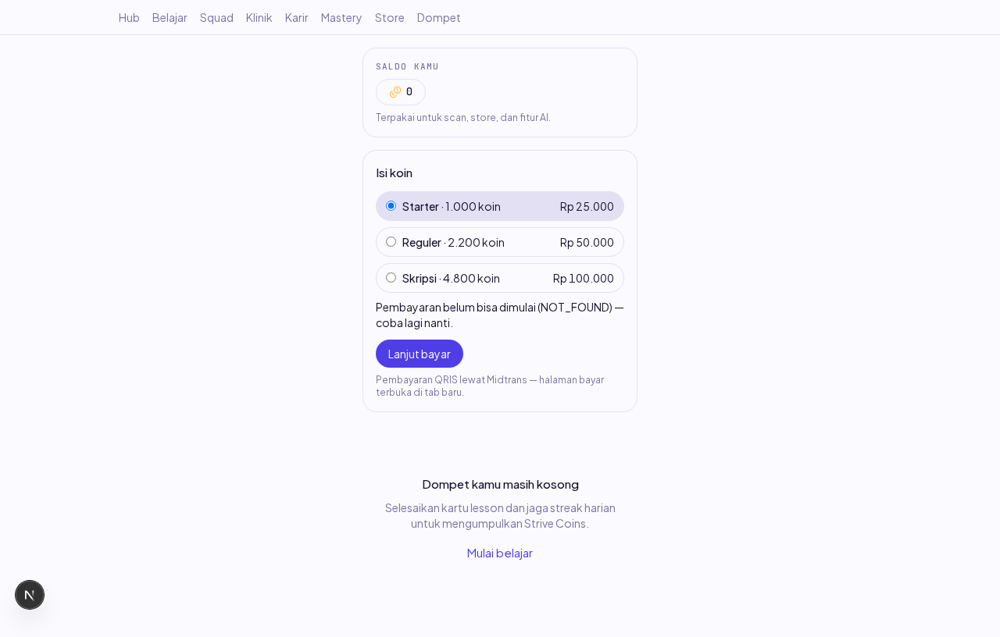
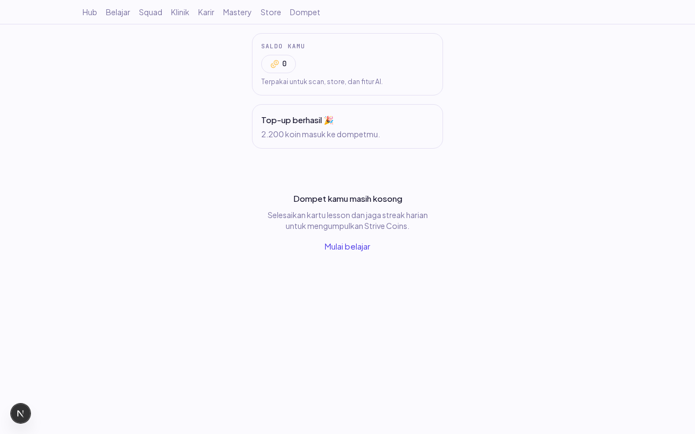
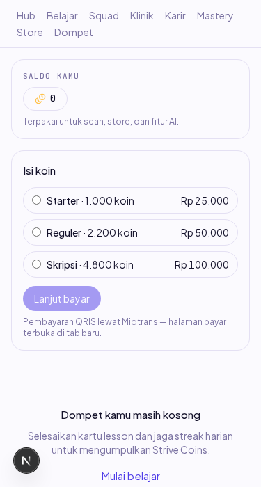

Laporan verifikasi end-to-end item P-04 (Dev B). Dikerjakan 18 Okt 2026 (sesi susulan minggu 12–16 Okt).
Dompet kini punya seksi "Isi koin": 3 paket dari GET /pricing (nyata, bukan fixture), pilih paket → POST /payments/checkout (⚡ kunci idempoten milik percobaan, PA-3) → Snap hosted terbuka di tab baru → polling GET /payments/orders/:id tiap 5 detik dengan batas waktu 10 menit: lunas → kartu berhasil + saldo menyegarkan senyap; gagal/kedaluwarsa → pesan jelas; batas waktu habis → pesan tenggang — tidak pernah menggantung selamanya (AC). Koin tidak pernah ditambahkan klien (PA-5): layar hanya membaca status.
Rute POST /payments/checkout belum punya controller — servicenya ter-merge dan teruji, tetapi tidak pernah diekspos (komentar checkout.service.ts:66 sendiri menuliskannya; ACCESS_MATRIX mendaftarkan rute yang tidak ada). Karena itu di verifikasi ini:
done sampai rute berdiri dan alur penuh terbukti end-to-end.| # | Skenario | Harapan | Hasil | Cara verifikasi |
|---|---|---|---|---|
| 1 | Dompet dibuka | Seksi top-up menampilkan ≥3 paket dari /pricing nyata | LULUS | Playwright + assert jumlah radio |
| 2 | Klik "Lanjut bayar" (rute belum ada) | Galat bersih ber-kode, tanpa menggantung, layar tetap bisa dipakai | LULUS | Screenshot 01 |
| 3 | Checkout menjawab (intercept → order pending nyata) | Fase menunggu: koin + rupiah + hitungan batas waktu tampil; tombol buka halaman bayar lagi | LULUS | Assert testid + teks hitungan |
| 4 | Order → paid di DB saat layar menunggu | Kartu "Top-up berhasil · 2.200 koin" muncul via polling ≤5 dtk TANPA reload; saldo menyegarkan senyap | LULUS | Screenshot 02 + log GET orders 200 |
| 5 | 375px | Tanpa scroll horizontal | LULUS | Screenshot 03 |
| 6 | Console | Bersih di luar 404 skenario #2 | LULUS | Listener console |
| 7 | Batas waktu polling (unit) | Hitungan 600→0 → fase tenggang, state stabil (tidak menggantung); order terlambat ditolak diam-diam | LULUS | 9 unit test mesin + sabotase leder tenggang merah |
| 8 | Reuse order tanpa redirect (PA-3) | Tetap masuk fase menunggu | LULUS | Unit test |

01 — Tiga paket nyata dari /pricing; galat rute #233 ditampilkan bersih dengan kodenya.

02 — Order → paid di DB: kartu berhasil muncul dari polling API nyata tanpa reload.

03 — 375px tanpa scroll horizontal.
| Pemicu | Gejala | Root cause | Expected setelah perbaikan | Reproduce |
|---|---|---|---|---|
| Order lunas saat kartu menunggu tampil | Kartu "berhasil" TIDAK muncul; seluruh seksi top-up kembali ke pilih paket (order & hitungan hilang) | DUA lapis: (1) onKoinMasuk dipanggil DI DALAM updater state (pembaruan saat render — React menolak, console error "Cannot update a component…"); (2) callback-nya muat() me-reset wallet ke fase memuat yang TIDAK merender TopupSection → remount menghancurkan state polling |
Efek samping pindah ke useEffect (updater murni); wallet punya muatSaldo senyap yang tidak mengubah fase |
Intercept checkout → order pending → UPDATE status paid → amati kartu |
| Kontrak paket {code,label} vs data nyata {id,name} | Radio tak pernah terpilih, tombol bayar mati, warning key React | Asumsi F-08 tidak pernah direkonsiliasi dengan seed F-13; P-04 konsumen pertama endpoint | Kontrak diselaraskan lewat PR terpisah (#234) sesuai aturan breaking-change kontrak | Bandingkan GET /pricing dengan pricingPackageSchema |
| Perintah | Hasil |
|---|---|
pnpm --filter @strive/web test | 87/87 hijau (9 baru: mesin top-up) |
pnpm lint && pnpm typecheck && pnpm build | hijau |
| Sabotase leder tenggang | 1 test merah → dipulihkan |
| Audit keamanan (agent-security) | terlampir di PR |